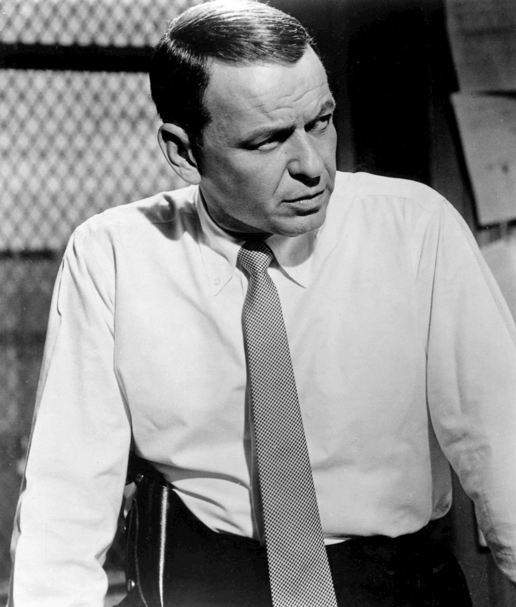

My Way by Frank Sinatra is a French song with English words by Paul Anka, recorded on December 30, 1968.
Reprise released it in March 1969, and it peaked at only number 27 on the Billboard Hot 100.
It still became his signature record, and Sinatra himself later came to dislike it.

Table of Contents
The Story Behind My Way by Frank Sinatra
From "Comme d'habitude" to Paris
The tune began as a French song called "Comme d'habitude," which means "As Usual."
Jacques Revaux, Gilles Thibaut and Claude François wrote it.
François drew on the end of his romance with the singer France Gall, so the song is about a couple going through the motions.
He recorded it in November 1967, and it spent one week at the top of the French pop chart in February 1968.
David Bowie's Failed Attempt
A music publisher asked a young David Bowie to write English lyrics in 1968.
His demo, "Even a Fool Learns to Love," was never formally released.
Wikipedia reports that Bowie later reworked the idea into "Life on Mars?"
Paul Anka Writes the Words
Paul Anka heard the French record while on vacation in France and negotiated for the rights.
Wikipedia reports he paid a nominal one dollar, and the French writers kept their royalties.
Anka has said Sinatra told him over dinner, "I'm quitting."
Anka then phoned the arranger Don Costa and wrote the lyric at about 1 a.m. on a typewriter, imagining what Sinatra would say.
About two months after he sent a demo, Anka says, Sinatra called to say it was "the one."
Recording the Sinatra Version
The December 30 Session
Sinatra recorded the song on December 30, 1968, at Western Studio A in Hollywood.
Don Costa arranged it and Sonny Burke produced it.
Wikipedia says Sinatra nailed it in a single take.
The B-side was "Blue Lace."
| Chart | Detail | Result |
|---|---|---|
| Billboard Hot 100 | Entered late March 1969 at No. 69 | Peak No. 27 |
| Billboard Easy Listening | Peak position | No. 2 |
| Cash Box Top 100 | Peak position | No. 29 |
| UK Singles | Peak position | No. 5 |
| Ireland | Peak position | No. 4 |
The Chart Run
A Modest Hit in America
The single was the highest new entry on the Hot 100 in the last week of March 1969.
It climbed for six weeks and stalled at number 27.
On the Easy Listening chart it did far better, peaking at number 2.
A Phenomenon in Britain
In the UK the single peaked at number 5 and then simply would not leave.
It spent 75 weeks in the Top 40, from April 1969 to September 1971.
Wikipedia counts a further 47 weeks in the Top 75, and it calls the run still unmatched.
The recording was inducted into the Grammy Hall of Fame in 2000.
Legacy and Cover Versions
A Song Sinatra Came to Dislike
Wikipedia reports that his daughter Tina Sinatra said he found the song self-serving and self-indulgent.
He felt it had stuck to him.
Elvis, Sid Vicious and Others
- Elvis Presley, whose live 1977 single reached No. 22 on the Hot 100
- Sid Vicious, whose 1978 punk version reached the UK Top 10
Presley's version outperformed Sinatra's original on the US Hot 100.
The Vicious version plays over the end credits of Martin Scorsese's Goodfellas.
Anka said in 2007 that the punk take left him "somewhat destabilized."
Where It Fits
The recording belongs to 1969, and it sits on our 100 best 60s songs list.
Sinatra's wider career is in our Frank Sinatra biography.
His 1966 chart-topper is in our Strangers in the Night story.
The sound belongs to the Jazz and Easy Listening hub, and you can hear more 1969 hits on Radio Dial.
FAQ
Who wrote My Way?
Jacques Revaux, Gilles Thibaut and Claude François wrote the French original, "Comme d'habitude."
Paul Anka wrote the English lyrics.
Did My Way reach number one?
No.
It peaked at number 27 on the Billboard Hot 100 and number 2 on the Easy Listening chart.
In the UK it reached number 5.
When did Frank Sinatra record My Way?
He recorded it on December 30, 1968, at Western Studio A in Hollywood.
Wikipedia reports it was done in one take.
Did Frank Sinatra like My Way?
Not in the end.
His daughter Tina Sinatra has said he came to find it self-serving and self-indulgent.
Who else has recorded My Way?
Elvis Presley, Sid Vicious and Brook Benton all recorded it.
Presley's 1977 live single reached number 22 on the Hot 100.
A rejected French ballad became the song people play at weddings, funerals and ballparks.
Wikipedia's entry on the song covers the cover versions and cultural uses in more depth.
Press play above and hear My Way by Frank Sinatra the way he cut it in one take.